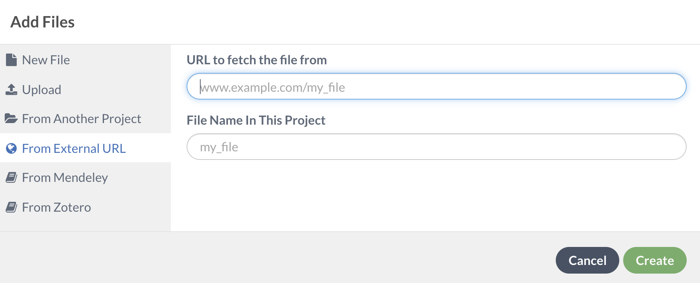

Creating Bibliographies in LaTeX¶
Objective: Learn the basic commands to create and edit in-text citations and bibliographies
Getting started with a .bib file¶
In order to include in-text citations and a bibliography, the document needs to refer to a .bib file. There are three ways to include a .bib file in a project in Overleaf.
Upload your own .bib file that is exported from a citation manager.
Link to a URL (.bib)
Connect your Overleaf account with Mendeley or Zotero
If working in a traditional LaTeX editor, locate the .bib file in the directory.
What does a citation in a .bib file look like?¶

Bibliography Packages¶
LaTeX uses two common packages to generate in-text citations and bibliographies.
natbib: works best with author-year citations and numerical citations. This package works well for simple, short bibliographies, but is not supported and less commonly used.
biblatex: the most flexible package for generating citations and the package that will be referred to in this document.
Packages required for the preamble:
\usepackage[backend=biber,style=authoryear]{biblatex}
The above syntax calls in the biblatex package and the backend (biber), which acts as the interface between the .bib file and the LaTeX document. “Authoryear” denotes the citation style. This can be changed accordingly.
\addbibresource{example.bib}
The above command calls in the .bib file, which has the citation information for in-text citations and the bibliography.
\printbibliography
The above command inserts the bibliography, which will contain citations referenced in the text.
In-text citations¶
\cite{} → bare citation command (according to style)
\parencite{} → parenthetical citation
\citeauthor{} → prints author names(s)
\textcite{} → prints authors or editors followed by a citation label enclosed in ()
\nocite {*} → prints publication in bibliography without citation
\citeyear{} → prints only the year field
Examples¶
\cite{knyazeva_duplex_2013} → Knyazeva and Pohl 2013
\parencite{singh_erratum:_2013} → (Singh et al. 2013)
\citeauthor{campbell_how_2011} → Campbell and Cabrera
\textcite{elsabbagh_microstructure_2014} → Elsabbagh, Hamouda, and Taha (2014)
Exercise¶
Connect a .bib file to a LaTeX document:
Upload your own .bib file
Use the following link for a sample .bib file to connect to your Overleaf project: bit.ly/2Jzxcw9
Link Overleaf to your Zotero or Mendeley account

Once connected, insert the Biblatex package and call in the .bib file.
Referencing the above in-text citation examples, insert 4 citations into your practice document. At the end of the document, insert the final bibliography.
For additional examples and more information, please visit Overleaf’s page on bibliography management in LaTeX